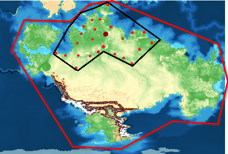

Oakozhposh ukshako ("Soldiers of Shako"), or Suko for short, is the primary nation of Ictuza. It was founded after the first large-scale battle for territory, where groups of soldiers settled into their forts and converted them into livable housing and cities. Multiple forts from different territories either agreed or were forced to join this new nation. Citizens of Suko are known as Sukozh, and the primary language spoken is Ictuk. Many Sukozh value justice, honor, and rights to resources as stated by the Nguho Ukshako ("Shako's Ideas"), or Ngusko for short. The largest and only legal religion in Suko is Ukshako ("Of Shako").

The red circles are each major city in Suko, the dark red point is the capital city, and the black border represents the country's borders.Suko is very densely packed country built around trade and mass travel. Everything is connected in a way to get to the capital city, Uaqu, which acts as a distribution and political command center.
Suko runs on a council of monarchs, where each city has its own queen. Each queen convenes once a year, or more during wartime, at the capital to discuss greater ordeals. The capital also releases a set of laws and structures in multiple areas for individual cities to follow.
Each city's government has a set of branches as defined by the capital's Uaquhumbaqo ("Uaqu Branch Rules") that all report to the city's queen.